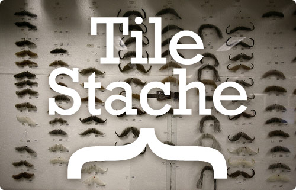

TileStache is a Python-based server application that can serve up map tiles based on rendered geographic data.
You might be familiar with TileCache, the venerable open source WMS server from MetaCarta. TileStache is similar, but we hope simpler and better-suited to the needs of designers and cartographers.
Read more about the motivations behind TileStache in an introductory blog post.
Get TileStache: on GitHub, from PyPI via easy_install, and as a direct download here. Modest Maps (Github, PyPI, download) is required to use TileStache.
See also documentation, and ask for help in the Tilestache group.

Mustaches: IMG_7531 by locaburg, on Flickr.
Features
Things TileStache does now:
- Renders Mapnik maps.
- Serves pre-rendered tiles out of MBTiles tilesets.
- Generates vector tiles from OGR datasources in GeoJSON usable in Polymaps.
- Caches to disk, Memcache, Amazon S3, MBTiles, and elsewhere.
- Serves tiles in Google-style spherical mercator projection and WGS84 lat/lon projection.
- Runs from CGI, mod_python, or Gunicorn WSGI.
- Uses metatiles.
Things TileStache might do in the near future:
- Render GDAL datasources
Design
The design of TileStache focuses on approachability at the expense of cleverness or completeness. Our hope is to make it easy for anyone to design a new map of their city, publish a fresh view of their world, or even build the next 8-Bit NYC.
Small
The core of TileStache is intended to have a small code footprint. It should be quick and easy to to understand what the library is doing and why, based on common entry points like included CGI scripts. Where possible, dynamic programming “magic” is to be avoided, in favor of basic, procedural and copiously-documented Python.
Pluggable
We want to accept plug-ins and extensions from outside TileStache, and offer TileStache itself as an extension for other systems. It must be possible to write and use additional caches or renderers without having to modify the core package itself, extend classes from inside the package, or navigate chains of class dependencies. Duck typing and stable interfaces win.
Sensible Defaults
The default action of a configured TileStache instance should permit the most common form of interaction: a worldwide, spherical-mercator upper-left oriented tile layout compatible with those used by OpenStreetMap, Google, Bing Maps, Yahoo! and others. It should be possible to make TileStache do whatever is necessary to support any external system, but we eschew complex, impenetrable standards in favor of pragmatic, fast utility with basic web clients.
Who
TileStache is a product of Michal Migurski with input from Aaron Cope, Zain Memon, Dane Springmeyer, Ian Dees, David Burgoon, Bill Mill, Per Liedman, Shawn Allen, Alessandro Pasotti, Nikolai Prokoschenko, Matthew Perry, Paul Smith, Alexander Clausen, Dave Leaver, Tom Nightingale, Andrew Semprebon, Ryan Breen, Alexey Noskov, Ragi Burhum, Seth Fitzsimmons, Fabian Büchler, and Lee Shepherd.